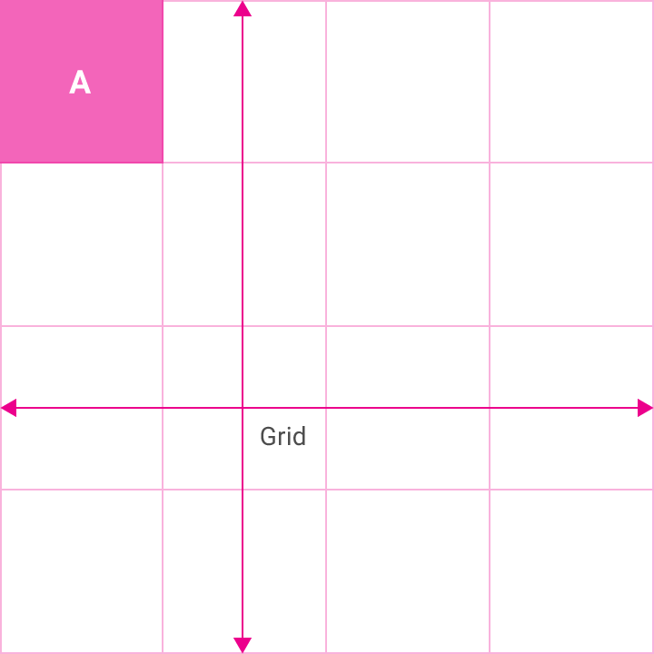
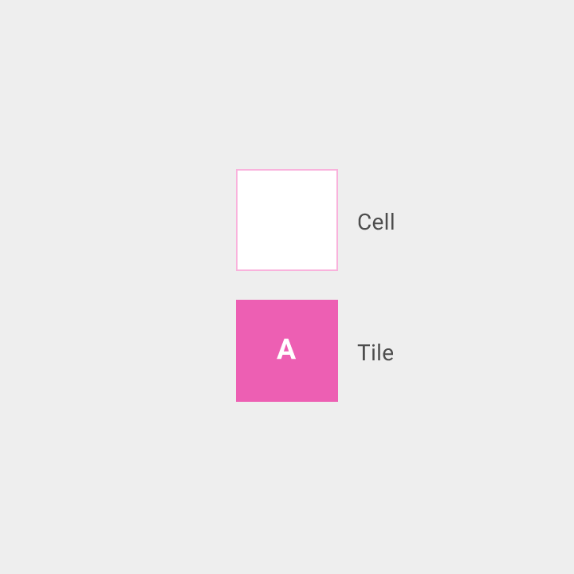

그리드 리스트는 일반적으로 이미지와 같은 균일한 데이터(Homogenous Data)를 제공하기에 가장 알맞으며, 시각적 이해(Visual Comprehension) 그리고 유사한 데이터 유형 간의 구별에 최적화되어 있습니다.

그리드 리스트의 예제
그리드 리스트는 그리드 리스트 내에 가로와 세로로 배열된 셀의 반복된 패턴으로 구성되어 있습니다.
타일은 내용물을 갖고 있으며, 수평이나 수직으로 하나 또는 그 이상의 셀에 걸쳐 있을 수 있습니다.

그리드 리스트의 예제

셀과 타일의 예제
타일 안에 텍스트가 주 내용물 조각들을 충분히 구별하기 위해 두드러질 필요가 있다면, 텍스트를 표시하고 읽기 이해를 높이는데 최적화된 리스트나 카드와 같은 다른 컨테이너를 사용하는 것을 고려해 보십시오.
리스트: 읽기 이해에 최적화됨, 특히 다양한 데이터 유형이 들어 있는 데이터의 집합을 비교하는 경우.
카드: 가변 길이의 캡션을 가진 사진, 여러 유형으로 이루어진 내용물이 있는 데이터 집합, 또는 사진과 비디오와 책이 혼합된 컬렉션과 같은 일관성이 없는 형식을 가진 내용물을 위해 사용.